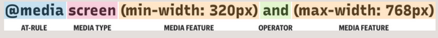
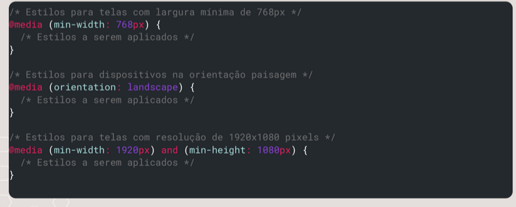

Sintaxe básica
- Como funciona
- 
- @media
-
palavra chave que indica o inicio de uma media query
@media [media-type] ([media-feature]) { estilos a serem aplicados }
- media type
-
define para qual tipo de midia o css que é aplicado no site será direcionado. Na maioria os casos será um screen, já que os ispositivos que verão estes sites possuem telas anexadas a eles.
@media screen { estilos a serem aplicados }Há outros exemplos de tipos de media como:
all: Ideal para todos os tipos de dispositivos. printmidia que divida o conteup em páginas para impressão. screen Para telas. speech: dispositivos que mostram o conteudo de forma audivel, tipo um leitor de tela. - media features
-
expressões que descrevem as caracteristicas do sipositivo, como largura e altura de tela, orientação - retrato ou paisagem, resolução, densitdade dos pixels e etc.

Exemplos de features possiveis:
width e hight: Altura e largura. minwidth e max-width largura minima e máxima. min-height e max-height: altura minima e máxima. device-width e device-height: Largura e altura fisica o dispositivo em pixels. orientatation: portrait or landscape, é a orientação do dispositivo. aspect-ratio: Proporção entre a largura e a altura da área de visualização. resolution: Define a reslução da tela em dpi - dots per inch. - Operadores
-
Juntam caracteristicas à serem aplicadas.
@media (min-width: 768px) and (orientation: landscape) { /* Seus estilos aqui */ }alguns dos operadores são:
and: Combina várias condições. Por exemplo, @media (min- width: 768px) and (orientation: landscape) aplica o estilo para telas com largura mínima de 768px e orientação paisagem.
or: Permite escolher entre várias condições. Por exemplo, @media (min-width: 768px) or (max-width: 480px) aplica o estilo para telas com largura mínima de 768px ou máxima de 480px.
not: Nega uma condição. Por exemplo, @media not (orientation: landscape) aplica o estilo para dispositivos na orientação retrato.
only: Especifica que a regra se aplica apenas a um determinado tipo de mídia. É menos utilizado hoje em dia, mas pode ser útil em alguns casos específicos.
break points
- extra small (xs)
- Para dispositivos muuuito pequenos. max de 320px.
- small (sm)
- Celulares modernos. largura máx de 576px;
- medium (md)
- Tablets em modo retrato, largura max: 768px
- extra large (xl)
- desktops e monitores de grande resolução. Largura minima: 1200px.
@media (max-width: 320px) {
/* Extra Small (XS) - Estilo para telas com largura máxima de 320px */
/* Dispositivos muito pequenos, como alguns smartphones antigos */
}
@media (max-width: 576px) {
/* Small (SM) - Estilo para telas com largura máxima de 576px */
/* Smartphones modernos */
}
@media (max-width: 768px) {
/* Medium (MD) - Estilo para telas com largura máxima de 768px */
/* Tablets em modo retrato */ }
@media (min-width: 992px) {
/* Large (LG) - Estilo para telas com largura mínima de 992px */
/* Tablets em modo paisagem e alguns laptops */
}
@media (
: 1200px) {
/* Extra Large (XL) - Estilo para telas com largura mínima de 1200px */
/* Desktops e monitores de alta resolução */
}
Na prática
Clique no botão abaixo e acesse o exemplo prático o que foi aqui conceituado.